Para este juego necesitaremos una nave espacial que tendrá varios disfraces de movimiento y de daños.
para los marcianos enemigos tendremos otro objeto, también con varios disfraces de movimiento y de daños. Este
objeto tendrá un sonido para cuando lo eliminemos.
La nave nodriza que aparecerá en la parte superior de la pantalla también será otro objeto necesario, con sus
disfraces de daños. Este objketo tendrá dos sonidos, uno para cuando aparezca la nave en el juego y otro para
cuando explote.
Nercesitaremos también tres objetos para las balas que lanzarán las naves, una parta nuestra nave con un
sonido para cuando la disparemos y otro sonido para cuando alcancemnos algún enemigo, otra poara los marcianos
con un sonido para cuando alcancemnos algún objeto y otra última bala que disparará la nave nodriza que
también tendrá un sonido para la explosión.
El último objeto que necesitaremos será un bloque que hará de parapeto para nuestra nave, con varios
disfraces de daños.
Necesitaremos un par de escenarios, uno de estellas y otro para terminar el juego.
Para descargar los objetos necesarios para el juego, lo haremos desde este link. Es un archivo comprimido con 8 objetos y 1 escenario. Lo descargaremos y lo descomprimimos en el directorio del alumno.
El juego tendrá una nave espacial que manejaremos nosotros y que se podrá mover únicamente de izquierda a
derecha pero sin sobrepasar los límites de la pantalla.
La nave disparará una bala cada vez que le demos a la tecla "Espacio" aunque tendrá que esperar un pequeño
tiempo entre disparo y disparo.
Los marcianos saldrán por la parte superior derecha de la pantalla e irá hacia la izquierda bajando y
cambiando de dirección cuando llegue al final. Al llegar abajo, volverá a empezar en la parte superior.
Al tocar la bala de la nave al marciano le irá quitando vida (3) cambiando de disfraces con distintos daños
hasta que lo elimine.
El marciano también disparará. Hay que tener en cuenta que son clones y hay que tener cuidado con la posición
de las balas cuando disparen. Estas balas, si nos dan, nos irán quitando vida (3) poco a poco.
Al quitarnos toda la vida, aparecerá en nuestra posición una explosión y terminará el juego cambiando el
fondo al de "Game Over".
Vamos a empezar por poner y programar nuestra nave y su movimiento. Crearemos tres variables globales, "Puntos"
donde guardaremos los puntos obtenidos, "Vidas" donde guardaremos la vidas que nos quedan y una "Posición X
Nave" donde guardaremos continuamente la posición "X" de nuestra nave, que después utilizaremos.
Colocaremos nuestra nave en la parte inferior de la pantalla y fijaremos el restilo de rotación para que no
rote.
La vaeriables las inicializaremos con "0" para los puntos y "3" para las vidas.
Le pondremos a la nave el primer disfraz, fijaremos su tamaño a un tamaño que nos permita jugar (20%) y la
mostramos.
Haremos un bucle para realizar el movimiento. Si pulsamos el cursor derecho lo moveremos hacia la derecha
siempre que no sobrepase los límites de la pantalla.
Lo mismo haremos si xse pulsa el cursor izquierdo. Al final guardaremos la posición "X" resultante en la
variable "Posición X Nave".
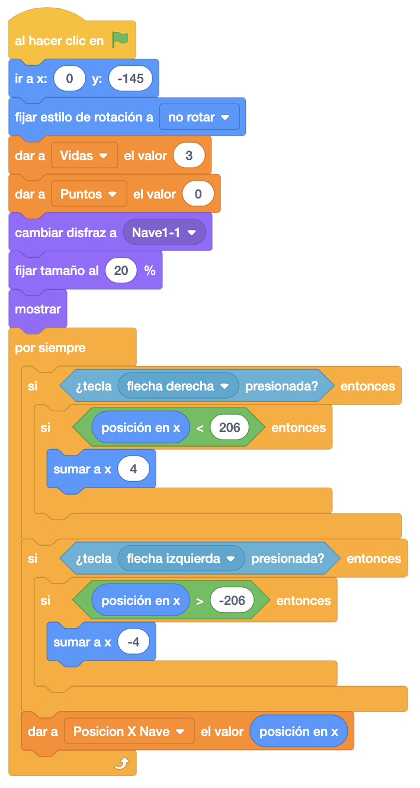
En otra etiqueta "AL Hacer Clic En La Bandera" vamos ha haceer la gestión de los disfraces. Tendremos 4
estados de la nave (sin daños y con daños) y dos disfraces por cada estado para darle un efecto de movimiento.
Las vidas de nuestra nave serán 3 y dependiendo de cuantas vidas le queden, le pondremois una pareja de
disfraces, alternando entre ellos.
Esperaremos al final para que sea más lento ese cambio de disfraces.
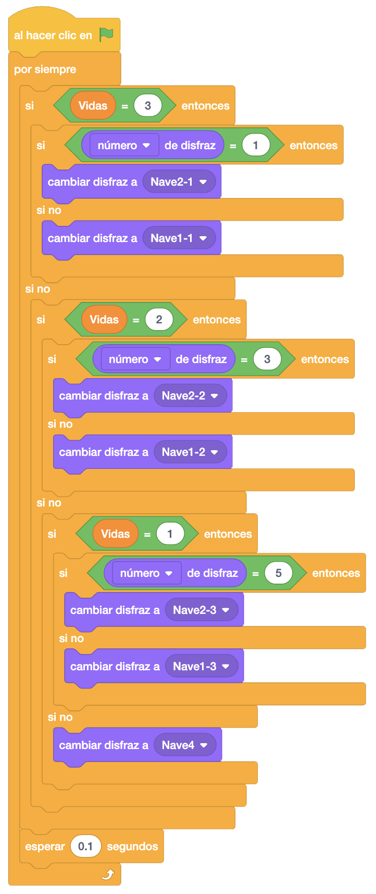
Vamos a continuar por el objeto de la bala de nuestro disparo. Esconderemos el objeto ya que vamos a crear
clones cada vez que disparemos.
Haremos un bucle para que cada vez que se pulse la tecla "Espacio" se dispare, haciendo el sonido del
disparo, creando un clon de la bala y esperando el tiempo que queramos de intervalo entre bala y bala.
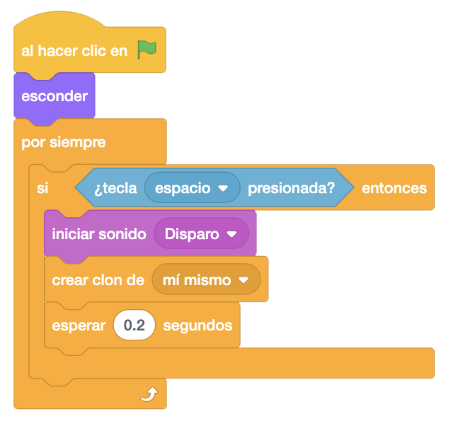
Ahora, al comenzar como clon, manadremos la bala a la posición de la nave, le sumaremos a "Y" 10 posiciones
para colocar la bala en la punta de la nave y la mostraremos.
Haremnos un bucle para que se mueva hasta que toque un borde. Posteriormente le añadiremos más condiciones
para que deje de moverse y controlaremos con qué otro objeto choca.
Una vez que se salga del bucle, eliminaremos el clon.
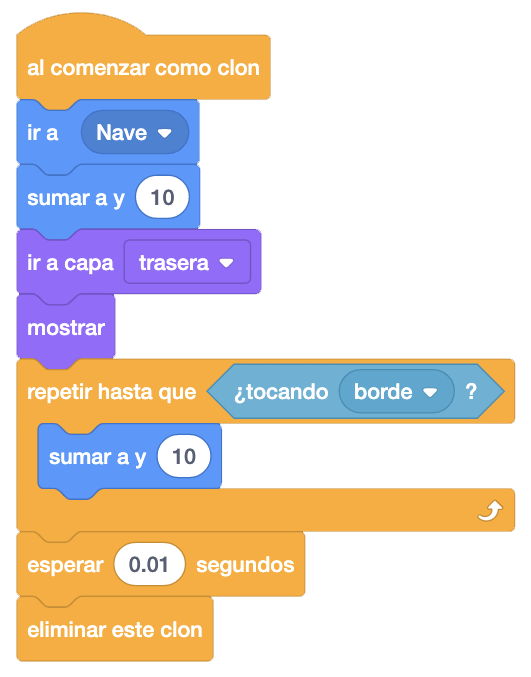
Vamos a programar ahora los marcianos que irán apareciendo poco a poco desde la parte superior derecha de la
pantalla.
Colocaremos el objeto en su sitio y lo esconderemos. Haremos un bucle para que cree 10 marcianos con un
segundo de espera entre cada uno.
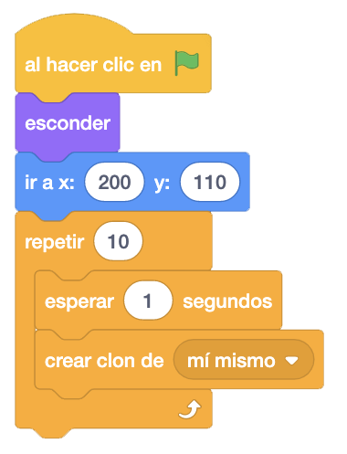
Vamos a programar ahora el movimiento de los marcianos. Para ello vamos a crear dos variables del propio
objeto, "_Direccion" donde guardaremos la dirección en la que se mueve el marciano y le daremos el valor
inicial de "Izquierda", y "_Vidas Marciano" donde almacenaremnos las vidas que le quedan al marciano, que
inicialmente serán "3".
Al comenzar como clon, mostraremos el marciano, inicializaremos las variables anteriores con sus valores y
haremos un bucle donde realizaremos el movimiento.
Dependiendo de la dirección, nos movemos a un lado o al otro. Si llegamos a una determinada posición en la
parte derecha, bajamos un poco y cambiamos la dirección. Lo mismo hacemos si llega a una determinada posición
en la parte izquierda. Si llegamos a la parte inferior izquierda de la pantalla, volvemos a la parte superior
y cambiamos de dirección.
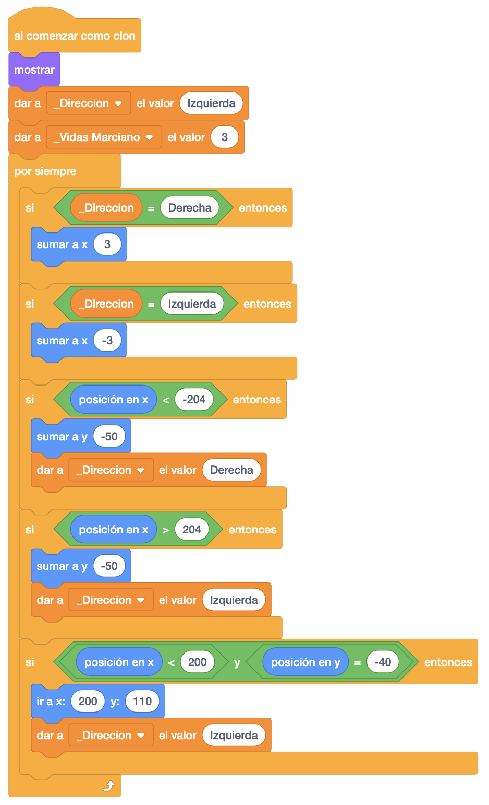
Ahora vamos ha hacere el efecto de movimiento de los marcianos con los disfraces. Tendremos 3 estados del
marciano (sin daños y con daños) y dos disfraces por cada estado para darle un efecto de movimiento.
Las vidas del marciano también serán 3 y dependiendo de cuantas vidas le queden, le pondremos una pareja de
disfraces u otra, alternando entre ellos.
Si no le quedaran vidas,m eliminaríamos el clon del marciano.
Al final, esperaremos un momento para darle tiempo a los disfraces.
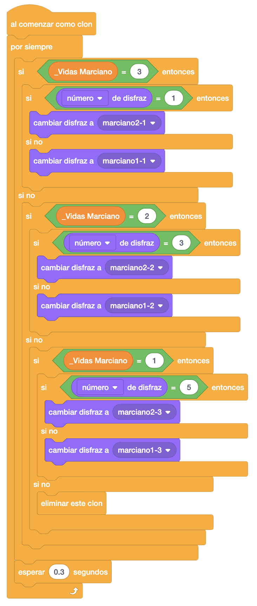
Vamos a programar ahora que cuando le toque una bala lanzada por nuestra nave, le quite una vida.
Para ello, dentro de un bucle, preguntaremos si está tocando la bala. Si es así, le quitaremos una vida al
marciano.
Si no le quedan vidas al marciano, sumaremos un punto, haremos sonar el sonido "Muerto" y si es el último
marciano (hemos llegado a 10 puntos ya que son 10 marcianos), enviamos el mensaje "Fin Juego" para terminar.
Después de preguntar si es el último marciano, eliminamos el clon.
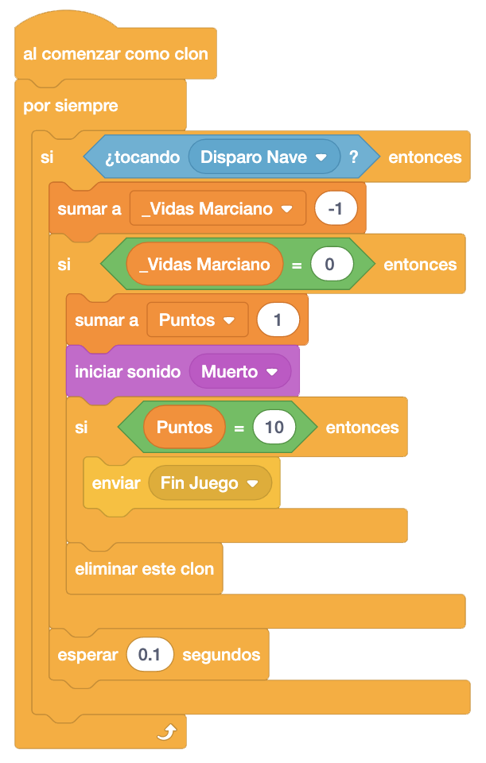
Para que la bala, al dar al marciano, también desaparezca, programaremos en la bala, donde pusimos que el movimiento fuera hasta que tocara el borde, que lo haga tammbién hasta que toque el marciano y una vez se salga del repetir, controlar si ha tocado al marciano para reproducir el sonido de la "Explosión".

Los marcianos también dispararán balas hacia nuestra nave. Para ello, crearemos dos variables "Posición X
Marciano" y "Posición Y Marciano".
Programaremos en el marciano que al empezar como clon hagamos un bucle que cada x tiempo guarde las
coordenadas "X" e "Y" de ese clon en las variables, creando un clon de la bala enemiga en ese momento.
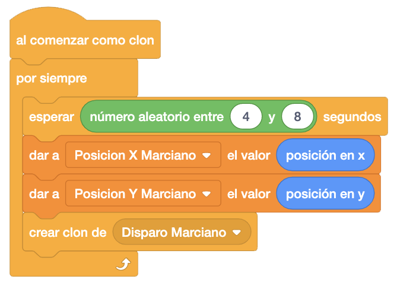
Por otro lado, en la bala enemiga vamos a programar que al empezar se esconda y al empezar como clon la vamos
a posicionar en las posiciones "X" e "Y" del marciano que nos indican las variables "Posición X Marciano" y
"Posición Y Marciano" y lo mostraremos.
Haremos un bucle para que se mueva hasta que toque el borde o toque nuestra nave (añadiremos más controles
posteriormente).
Una vez termine el bucle, controlaremos si ha terminado porque ha tocado la nave para iniciar un sonido de e
xplosión y quitarle una vida. Si ya no le quedaran vidas, enviaremos el mensaje "Explosión" para mostrar el
objeto de la explosión y el mensaje "Fin Juego" para terminar.
Finalmente, eliminaremos el clon.
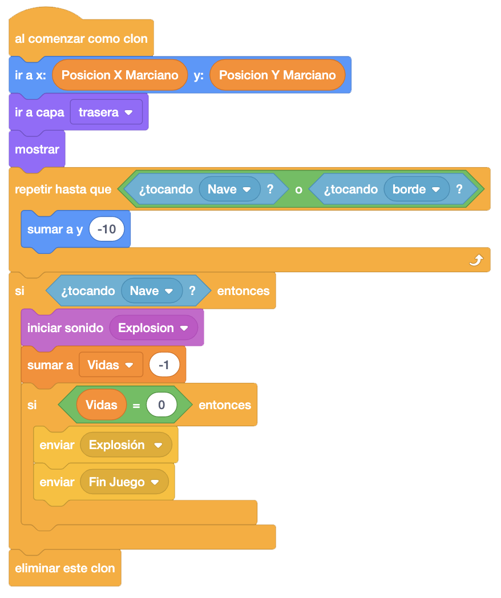
Es el turno de la explosión de nuestra nave, que aparecerá cuando nos quiten todas las vidas.
Al empezar como clon en el objeto "Explosión", detendremos todos los sonidos para reproducir el sonido de
"Explosión" de la nave, colocaremos la explosión encima de la misma, pondremos el primer disfraz y la
mostraremos.
Haremos un bucle para que cambie a todos los disfraces de la explosión y la esconderemos.
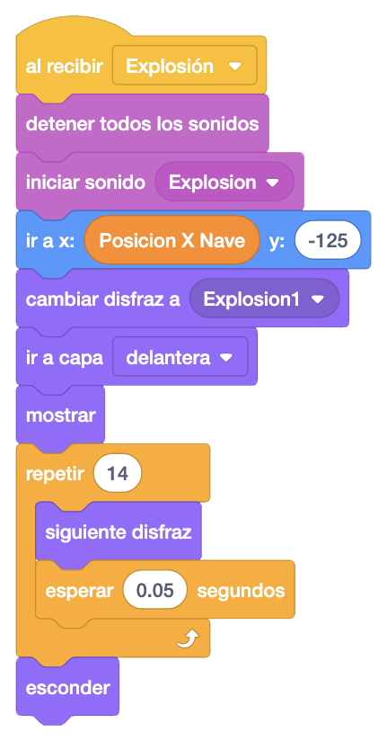
Vamos a volver sobre la nave para programar al recibir los mensajes "Explosión" y "Fin Juego". Al recibir
"Explosión", detendremos otros programas del objeto, y lo esconderemos.
Al recibir "Explosión", también detendremos otros programas del objeto, y lo esconderemos.
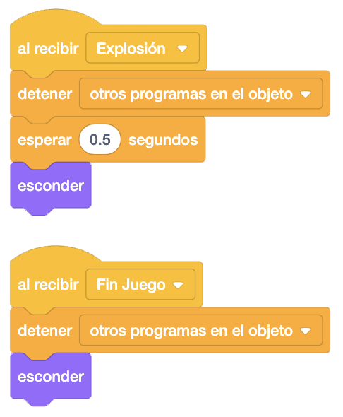
Ahora iremos de nuevo al disparo de nuestra nave para programar que al recibir el mensaje "Fin Juego" detendremos otros programas del objeto, y eliminaremos el clon.
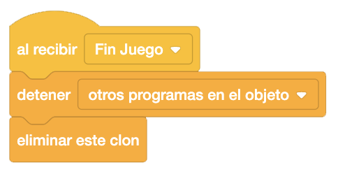
Lo mismo haremos en el marciano. Al recibir el mensaje "Fin Juego" detendremos otros programas del objeto, y eliminaremos el clon.
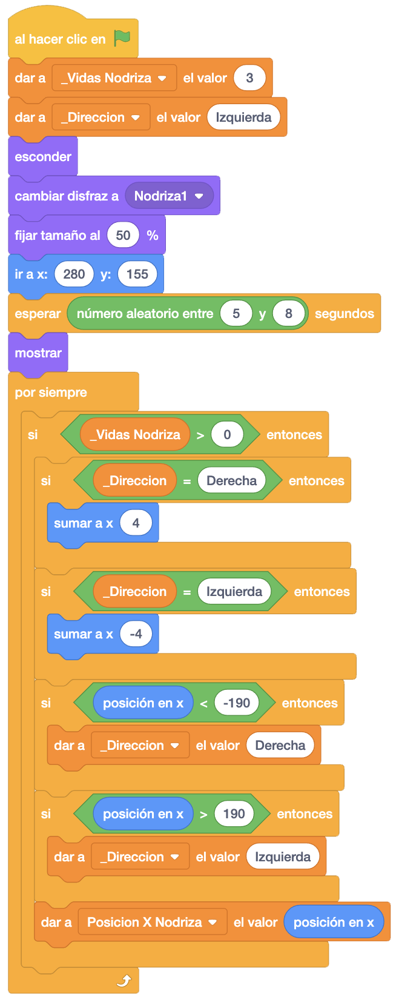

Un reto interesante que podemos añadir al juego es poner otro tipo de coches (camiones, motos, etc.) que vayan siempre a una dirección fija y no hacia nuestra posición.
Y el juego quedaría así.

Para ver el juego terminado pulsa
aquí.
Para descargarte el juego terminado pulsa
aquí.